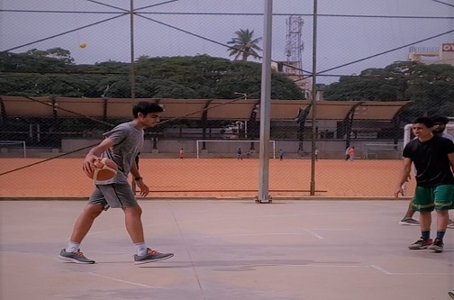
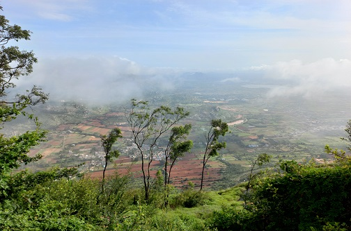
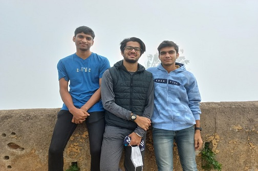

Hello, My name is Sahil Kumar. You can address me by my first name Sahil,I was born in Haryana near Delhi.Then moved onto Banglore at the age of 8, which is on the south end of India. It's also known as the "silicon valley of India" because of its role in promoting the IT sector of India. I have done my schooling at BP Indian Public School and high school from Hymamshu Jyothi Kala Peetha with a major in computer science. My all time favourite sport is basketball. I had taken part in many tournaments during my high school year, and I have played at national levels.
One of my favourite hobbies is to travel with my friends and exploring new places. So, recently I visited nandi hills which are situated near the district of chikballapur. As we reached the top of the hill we just experienced a whole new and exquisite world. I just remembered a funny incident, while having a small photo session a monkey just appeared out of nowhere and snatched my friend’s phone and ran away later we got the phone by luring the monkey with some bananas.
 
The reason behind enrolling in this software development program is that
it gives me the perfect opportunity to become a front-end web developer
and create desktop applications with learning algorithms. Technology has
made my life easier by reducing workload and increasing my efficiency on
given tasks. I am passionate about technology, As I enjoy nothing more
than learning new trends and ideas of technology. As I believe that
technology paves a new path towards a better future.